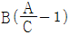
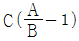
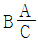
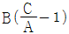
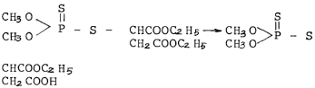

식물보호산업기사 (2003-03-16 기출문제)
1과목: 식물병리학
1. 가지과작물 풋마름병(靑枯病)의 병원체는 ?
- 선충
- 바이러스
- 세균
- 곰팡이
(정답률: 82%)

2. 다음 중 병의 발생을 특히 많게 하는 것은 ?
- 규산
- 칼륨
- 질소
- 인산
(정답률: 97%)
3. 논에서 벼도열병균의 주된 전파방법은 ?
- 토양전염
- 풍매전염
- 수매전염
- 충매전염
(정답률: 78%)
4. 다음 무기원소 중에서 벼에 사용하므로서 도열병의 발생을 억제할 수 있는 영양원소는 어느 것인가 ?
- 질소(N)
- 인(P)
- 칼륨(K)
- 규소(Si)
(정답률: 75%)
5. 배, 사과나무 화상병균은 무엇인가 ?
- 세균
- 곰팡이
- 바이러스
- 파이토플라스마
(정답률: 77%)
6. 배나무 붉은별무늬병의 중간기주는 무엇인가 ?
- 매발톱나무
- 향나무
- 사과나무
- 전나무
(정답률: 91%)
7. 강풍후에 특히 발생이 많은 병은 ?
- 수박 덩굴쪼김병
- 벼 흰잎마름병
- 가지 풋마름병
- 오이 역병
(정답률: 84%)
8. 식물병 중 세균에 의하여 발생하는 병의 일반적인 병징은 어느 것인가 ?
- 황화증상
- 무름 증상
- 모자이크 증상
- 빗자루 증상
(정답률: 77%)
9. 다음 중 바이러스병은 어느 것인가 ?
- 벼 잎집무늬마름병
- 채소의 무름병
- 배나무 붉은별무늬병
- 사과나무 고접병
(정답률: 60%)
10. 고구마 무름병의 특징적인 표조(표징)는 ?
- 포자낭
- 포자퇴
- 균핵
- 자낭각
(정답률: 44%)
11. 다음 중 비전염성인 병은 ?
- 선충에 의한 병
- 영양결핍에 의한 병
- 세균에 의한 병
- 바이러스에 의한 병
(정답률: 91%)
12. 과수 근두암종병이 발생하기에 가장 좋은 환경은 ?
- 고온 다습
- 고온 건조
- 저온 다습
- 저온 건조
(정답률: 68%)
13. 소나무잎녹병(Needle rust)의 병원균은 어디에서 월동하는가 ?
- 낙엽과 같이 월동한다.
- 소나무 잎속에서 월동한다.
- 소나무 가지에서 월동한다.
- 소나무 줄기에서 월동한다.
(정답률: 56%)
14. 다음 중 나머지 셋과는 다른 종류의 식물병원균은 ?
- 고추 역병균
- 맥류 흰가루병균
- 채소 균핵병균
- 벼 키다리병균
(정답률: 47%)
15. 세균이 주로 물관부에서 증식하여, 물 공급에 장애가 생김으로 시들음이 나타나는 병은 ?
- 과수 근두암종병
- 배추 무름병
- 토마토 풋마름병
- 토마토 세균성점무늬병
(정답률: 81%)
16. 병든식물의 즙액접종법으로 구분 진단이 가장 용이한 식물병은 ?
- 감자 둘레썩음병과 더뎅이병
- 벼 도열병과 오갈병
- 감자 Y바이러스와 X바이러스
- 오이 노균병과 세균성점무늬병
(정답률: 59%)
17. 병무늬 위에 형성되는 포자를 관찰하는 병원학적 진단이 어려운 병은 ?
- 벼 도열병
- 콩 탄저병
- 벼 오갈병
- 벼 깨씨무늬병
(정답률: 67%)
18. 다음 식물병의 방제법으로 가장 적절하지 못한 것은 ?
- 배나무 붉은별무늬병 - 배나무와 향나무의 거리를 1.5km 이상 격리시킨다.
- 벼 도열병 - 찬물을 직접 논에 넣지 않고, 얕게 대되 마르지 않게 한다.
- 배추 무사마귀병 - 토양을 pH 5.0이하의 산성으로 유지한다.
- 포도나무 노균병 - 비가림재배를 하기도 한다.
(정답률: 89%)
19. 다음 중 병의 방제법으로 잘못 설명된 것은 ?
- 대추나무 빗자루병은 테트라싸이클린 항생제로 치료한다.
- 뽕나무 오갈병의 방제를 위해 매미충류 구제(驅除)가 필요하다.
- 과수 뿌리혹병을 방제하기 위해서는 묘목에 상처가 나지 않게 해야 한다.
- 양배추 검은빛썩음병은 무병주에서의 채종은 필요하지 않다.
(정답률: 91%)
20. 저장병의 방제에 관한 설명으로 가장 옳지 못한 것은 ?
- 현미는 25℃, 80% 습도조건에서 저장해야 변질미 발생이 억제된다.
- 큐어링(curing)은 고구마 검은무늬병 방제대책의 하나이다.
- 큐어링은 고구마를 35℃, 습도 90% 이상에서 5~6일간 유지하는 것이다.
- 현미는 수분함량을 15% 이하로 하여 10℃, 습도 70%에서 저장하는 것이 좋다.
(정답률: 68%)
2과목: 농림해충학
21. 내한성(耐寒性)이 가장 약한 해충은 어느 것인가 ?
- 애멸구
- 벼멸구
- 끝동매미충
- 번개매미충
(정답률: 75%)
22. 번데기 또는 마지막 영기의 약충이 탈피하여 성충이 되는 현상을 무엇이라고 하는가 ?
- 부화
- 우화
- 용화
- 세대
(정답률: 69%)
23. 씹는 형의 입을 가진 곤충에서 식물 조직을 잘게 부수는 역할을 하는 것은 ?
- 큰턱
- 작은 턱
- 아랫입술
- 윗입술
(정답률: 73%)
24. 1년에 5~10회 발생하는 해충으로 고온건조시 피해가 심한 것은 ?
- 깍지벌레
- 나무이류
- 응애류
- 거품벌레
(정답률: 77%)
25. 곤충의 눈에서 수정체도 없고 상을 제대로 형성할 수 없는 광감각기는 ?
- 겹눈(Compound eye)
- 홑눈(Dorsal ocelli)
- 낱눈(Ommatidium)
- 옆홑눈(Stemmata)
(정답률: 72%)
26. 벼줄기굴파리 2화기의 주 가해 부위는 ?
- 엽초
- 지엽
- 줄기
- 이삭
(정답률: 50%)
27. 곤충의 파악기(把握器)를 알맞게 설명한 것은 ?
- 파리목의 뒷날개가 변형된 것
- 암컷의 생식기 부속기관
- 수컷이 교미시 암컷을 붙잡는 부속기구
- 일벌암컷의 산란관이 독침으로 변형된 것
(정답률: 71%)
28. 배추벼룩잎벌레에 관하여 잘못 설명된 것은 ?
- 유충이 잎을 가해한다.
- 잡초나 얕은 땅속에서 월동한다.
- 성충으로 월동한다.
- 무도 가해한다.
(정답률: 48%)
29. 살충제의 사용은 해충방제의 효과적인 수단이지만 부작용도 있다. 다음 중 살충제의 부작용이라고 볼 수 없는 것은 ?
- 약제 저항성 해충의 출현
- 자연계의 평형 파괴
- 동물상의 다양화
- 잠재곤충의 해충화
(정답률: 80%)
30. 곤충의 종간(種間) 통신에 사용되는 방어물질은 어떤 것인가 ?
- 카이로몬(kairomone)
- 알로몬(allomone)
- 봄비콜(bombykol)
- 알라타(allata)체 호르몬
(정답률: 67%)
31. 다음 분비선 중 호르몬 분비선이 아닌 것은 ?
- 알라타체
- 중장선
- 뇌신경세포
- 흉선
(정답률: 57%)
32. 성충과 유충(약충)이 다 같이 가해하는 것은 ?
- 고자리파리
- 콩풍뎅이
- 거세미나방
- 도둑나방
(정답률: 52%)
33. 곤충의 기문수는 ?
- 1쌍
- 2쌍
- 8쌍
- 종에 따라 다르다.
(정답률: 72%)
34. 목재섬유인 셀룰로오스(Cellulose)를 분해할 수 있는 공생미생물은 흰개미의 몸 어느 부위에서 존재하는가 ?
- 입
- 위
- 전장
- 직장
(정답률: 62%)
35. 종합적 해충관리의 방법과 거리가 먼 것은 ?
- 해충발생예찰의 철저
- 철저한 유기농법의 확대
- 천적이용을 확대
- 농약의 합리적인 사용
(정답률: 80%)
36. 곤충의 신경계 중에서 뇌와 배신경줄로 이루어진 신경계는 어느 것인가 ?
- 중추신경계
- 말초신경계
- 앞창자신경계
- 식도밑신경구
(정답률: 80%)
37. 불완전변태를 하는 것은 어느 것인가 ?
- 벌류
- 파리류
- 노린재류
- 딱정벌레류
(정답률: 86%)
38. 산란에 의해 피해를 주는 해충은 ?
- 말매미
- 사과혹진딧물
- 조명나방
- 이화명나방
(정답률: 67%)
39. 침엽수, 특히 소나무류의 그을음병은 곤충의 배설물에 2차적으로 기생하는 부생성(腐生性) 그을음병균에 의한 것이 대부분이다. 다음 곤충류 중 그을음병 유발과 관계가 깊은 곤충류는 어느 것인가 ?
- 멸구류
- 응애류
- 깍지벌레류
- 노린재류
(정답률: 63%)
40. 가장 많은 종수를 갖고 있는 곤충목은 ?
- 딱정벌레목
- 메뚜기목
- 파리목
- 이목
(정답률: 87%)
3과목: 농약학
41. 농약사용법으로 옳지 않은 것은?
- 농약을 뿌릴 때는 바람을 등지고 마스크, 고무장갑 및 방제복 등을 착용
- 안전사용기준과 취급제한기준 준수
- 제 4종 복합비료(영양제)와 함께 사용
- 중독증상이 있을 때는 즉시 작업중지
(정답률: 84%)
42. 급성독성을 표시하는 단위는?
- LD50
- LC50
- ADI
- NOEL
(정답률: 83%)
43. 다음 농약 중 원예용 약제는?
- 만코지 수화제
- 카보설판 입제
- 부타 유제
- 펜톡사존 입제
(정답률: 72%)
44. 수용제 제형을 설명한 것은?
- 분상 또는 정제로서 물에 희석하였을 때 용해되는 농약
- 액상으로서 물에 희석하였을 때 용해되는 농약
- 액상으로서 물에 희석하였을 때 유화되는 농약
- 분상으로서 원상태로 사용되는 농약
(정답률: 62%)
45. Carbamate계 살충제가 아닌 것은?
- NAC
- BPMC
- MIPC
- DDVP
(정답률: 75%)
46. DDVP,용매,유화제가 각각 20:65:15% 의 조성을 가진 제제의 형태는?
- DDVP 분제(Dust)
- DDVP 유제(Emulsifiable Concentrate)
- DDVP 입제(Granule)
- DDVP 수화제(Wettable powder)
(정답률: 67%)
47. 비등점이 낮은 농약의 주제를 액상, 고상 또는 압축가스의 형태로 용기내에 충전한 것으로 용기를 열어줌으로써 대기중에 가스상으로 방출되어 병해충에 독작용을 나타내는 제형은?
- 훈연제
- 훈증제
- 연무제
- 도포제
(정답률: 67%)
48. 헤테로 옥신은?
- IAA
- MH
- 2,4-D
- BA
(정답률: 69%)
49. 유기인계 살충제의 성질로 옳은 것은?
- 동물의 체내에서 분해가 느리다.
- 알칼리에는 용이하게 분해 된다.
- 알칼리에는 안전하다.
- 알칼리 및 산에는 안전하다.
(정답률: 74%)
50. 도열병 방제와는 관계가 없는 농약은?
- 아이비유제(키타진)
- 이소란입제(후치왕)
- 네오진액제(네오아소진)
- 베나솔입제(오리자)
(정답률: 66%)
51. 수확기 농산물 중에 농약의 잔류량이 잔류허용기준을 초과하지 않도록 하기 위해 작물별로 농약의 살포횟수와 최종살포시기(일수)를 제한하는 기준은?
- 농약안전사용기준
- 안전계수
- 최대잔류허용기준
- 농약사용지침
(정답률: 57%)
52. 무기계 살서제로 냄새가 없고 흰색가루로 사람, 가축에 대한 독성이 비교적 적고, 들쥐구제용으로 쓰이는 것은?
- 흰 인
- 탄산바륨
- 안 투
- 토모린
(정답률: 47%)
53. 어류(魚類)에 대한 독성이 가장 낮은 것은?
- 디아지논(Diazinon)유제
- 델타린유제(Deltamethrin)
- 크로포유제(Chlorpyrifos)
- 부타유제(Butachlor)
(정답률: 60%)
54. 우리 나라 농약관리법에서 잔류성에 의한 농약의 구분에 해당하지 않는 것은?
- 작물잔류성 농약
- 토양잔류성 농약
- 수질오염성 농약
- 환경잔류성 농약
(정답률: 77%)
55. 지베레린(Gibberellic acid)생리작용이 아닌 것은?
- 식물절편의 신장을 촉진하고 무상식물에 효과를 나타내지 않는다.
- 포도의 단위결과를 촉진한다.
- 곡류종자의 가수분해 효소의 생합성을 촉진한다.
- 발아에 광이 요구되는 종자의 암발아를 촉진한다.
(정답률: 68%)
56. 농약 살포액 조제 시 사용되는 적당한 물은?
- 알칼리성인 물
- 뜨거운 물
- 효소를 넣어 발효시킨 물
- 물의 온도가 높지 않은 일반적인 물
(정답률: 77%)
57. 유기인계 살균제는?
- 에디펜제(히노산제)
- 네오진제(네오아소진제)
- 홀펫제
- 라브사이드제
(정답률: 58%)
58. 잔류독성 문제로 제조 및 사용이 금지된 농약은?
- 마라티온
- DDT
- 마세트
- 비타박스
(정답률: 68%)
59. 농도 A %의 유제 B ml(비중=1)를 사용 농도인 C %로 희석하는데 소요되는 물의 양을 계산하는 식은?




(정답률: 65%)
60. 위 반응에서 카르본산 에스테르를 가수분해 시키는데 관련된 효소는?

- Carboxyesterase
- Phosphatase
- Catalase
- Acetylase
(정답률: 62%)
4과목: 잡초방제학
61. 광엽잡초가 아닌 것은 ?
- 올미
- 쇠비름
- 가래
- 바랭이
(정답률: 63%)
62. 겨울작물 밭에 발생하는 우점초종은 ?
- 바랭이
- 쇠비름
- 냉이
- 깨풀
(정답률: 69%)
63. 종자의 발아에는 최소량의 산소공급이 요구되는데 산소요구도가 가장 낮은 잡초는 ?
- 명아주
- 쇠비름
- 물달개비
- 향부자
(정답률: 62%)
64. 다음 밭잡초 중 다년생 잡초가 아닌 것은 ?
- 참소리쟁이
- 씀바귀
- 쑥
- 여뀌
(정답률: 66%)
65. 잡초의 경종적 방제법에 해당되지 않는 것은 ?
- 논가을갈이(추경)
- 윤작재배
- 소각
- 비닐피복재배
(정답률: 68%)
66. 잡초 방제법 중에서 생태적 방제가 아닌 것은 ?
- 제초제 사용
- 경운, 관개
- 윤작, 재식밀도
- 피복작물 재배
(정답률: 79%)
67. 1년생 화본과 잡초로 벼의 수량에 크게 영향을 미치는 잡초는 ?
- 피
- 올방개
- 올미
- 너도방동사니
(정답률: 92%)
68. 호르몬형 제초제로 이행성이 있는 것은 ?
- glyphosate
- 2,4-D
- bentazon
- paraquat
(정답률: 84%)
69. 제초제를 안전하게 사용하는 방법 중 맞지 않는 것은 ?
- 적종의 제초제를 선택하여야 한다.
- 적기에 적종을 산포하여야 한다.
- 적기에 적종을 적량을 산포하여야 한다.
- 제초제를 적게만 처리하면 된다.
(정답률: 86%)
70. 1단보당 4kg을 살포하도록 되어 있는 제초제를 1/2000a pot에 같은 약량수준으로 살포하려고 할 때 그 살포량은 ?
- 2g
- 0.2g
- 0.8g
- 8g
(정답률: 39%)
71. 식물체의 종간경합이란 ?
- 작물과 잡초간의 경합을 의미한다.
- 벼와 벼간의 경합을 의미한다.
- 피와 피간의 경합을 의미한다.
- 잡초와 잡초간의 경합을 의미한다.
(정답률: 83%)
72. 잡초로 인한 피해 양상이 아닌 것은 ?
- 저위생산, 토지의 비효율성
- 병충으로 인하여 부가되는 보호비용
- 생산물의 품질저하
- 인간능률의 증대
(정답률: 84%)
73. 모내기 하루 전에 써레질을 하고 모내기를 한 후 5일째에 제초제를 처리하려고 한다. 어느 종류의 제초제를 처리하는 것이 가장 효과적인가 ?
- 선택성 발아 억제형
- 비선택성 발아 억제형
- 선택성 경엽 처리제
- 비선택성 경엽 처리제
(정답률: 63%)
74. 잡초 종자의 특징을 바르게 설명한 것은 ?
- 피 - 까락이 전혀 없다.
- 망초 - 깃털이 없다.
- 도꼬마리 - 돌기가 나 있다.
- 명아주 - 표면이 끈끈하다.
(정답률: 74%)
75. 두 종류 이상의 제초제를 혼합하여 얻은 효과가 각각의 제초제 처리에서 얻은 효과의 합 보다 높을 때는 어떤 효과가 일어났다고 보는가 ?
- 부가효과(Additive)
- 상승효과(Synergistic)
- 길항효과(Antagonistic)
- 독립효과(Independent)
(정답률: 77%)
76. 방동사니과 잡초가 아닌 것은 ?
- 둑새풀
- 올방개
- 너도방동사니
- 향부자
(정답률: 70%)
77. 잡초방제법으로 적합치 못한 것은 ?
- 약제방제
- 다비재배
- 돌려짓기
- 태우기
(정답률: 74%)
78. 제초제를 연용하여도 저항성 잡초의 발현사례가 적은 이유가 아닌 것은 ?
- 토양에 많은 양의 감수성 잡초종자 함유
- 잡초의 생식 및 번식빈도가 1년에 수회 반복
- 제초제 약효 지속성이 짧음
- 감수성 잡초보다 저항성 잡초계통의 고정율이 낮음
(정답률: 69%)
79. 다음 중 비선택성 제초제가 아닌 것은 ?
- 2,4-D
- Glyphosate(근사미)
- Paraquat(그라목손)
- Bialaphos
(정답률: 66%)
80. 다음 중 주로 덩이줄기(괴경)로 번식하는 잡초는 ?
- 올미
- 물달개비
- 마디꽃
- 사마귀풀
(정답률: 74%)